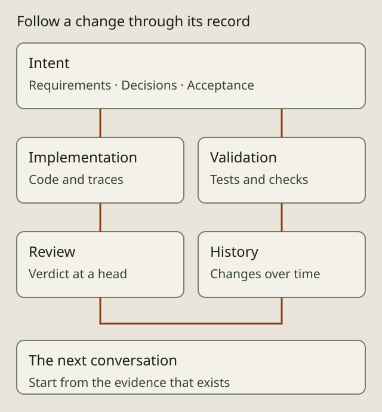

THE GOVERNED SOFTWARE FACTORY
Follow intent through a change

AIDA connects the intent for a software change to the work and evidence around it. It is alpha software for Linux. Begin with one bounded change and inspect the record it produces before delegating more work.
Keep intent available
Agents can record requirements, acceptance criteria, decisions and comments in the spec graph. Typed relationships connect related work. Stable IDs and code traces help a later contributor find the intent behind a behavior. Capture depends on the configured agent using the tools; unrecorded conversations are not recovered automatically.
Coordinate delivery
Roles, queues, scoped worktrees and leases help separate responsibilities and concurrent changes. The workflow guide follows discussion, capture, implementation, independent review and integration. These coordination records do not create a security boundary between processes running as the same Unix user.
The autonomy guide explains operator, guided, drive and drain execution. Choose how people participate per spec. Dispatch still depends on the applicable authority, review, CI and hold gates; a mode selection is not a permission grant.
Inspect evidence and return later
Trace comments connect source to intent. History records how specs change; review verdicts identify the commit they assessed. Reporting helps find work waiting on a person or another agent. The Metrics guide explains what recorded usage can and cannot establish. AIDA does not infer customer outcomes, financial return or complete attribution from missing evidence.
A colleague or future agent can start with the requirement, inspect its decisions and linked implementation, and update the acceptance criteria as the product evolves. The store, source history, derived cache and local operational evidence have different retention and recovery properties; the trust guide explains those limits.
Evaluate a capability in your project
Use the getting-started guide to connect the agent and project. Ask it to capture a change, show the acceptance criteria, implement in a scoped worktree and explain the resulting evidence. Read the integration guide before configuring additional clients or external systems.
Source and inspection
The overview describes the product surface. The spec reference, work reference and reporting reference explain the corresponding CLI behavior. Inspect aida show --help, aida queue --help and aida history --help for the installed version. This guide makes no production-readiness or security guarantee.